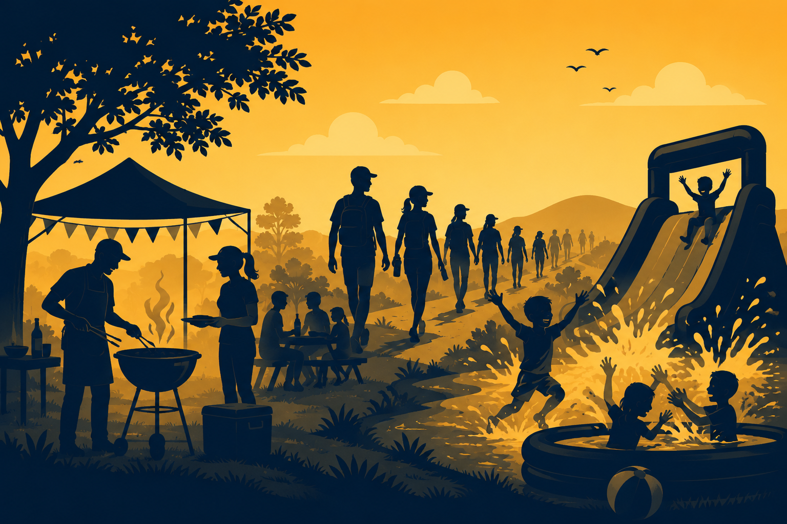

VOLHARD
At Voorpos Primary we believe that school is more than just learning. Our culture promotes respect, teamwork, creativity and leadership.
We respect ourselves, our teachers and our community.
We work together to support and encourage each other.
We develop young leaders who inspire others.
We take pride in our actions and our learning.
At Voorpos Primary, student life goes beyond the classroom. We provide a balanced environment where learners grow academically, creatively, and socially. Through a variety of activities, we encourage curiosity, teamwork, and confidence, helping every child develop their full potential.
Through these activities, friendships are built, talents are discovered, and a strong sense of belonging is created — making Voorpos Primary a true family.
Fun academic activities that encourage learners to explore.
Creative expression through music and sport.

Explore and engage with our fellow Voories.
Building a supportive environment where learners, teachers, and parents work together to inspire excellence, respect, and lifelong success.